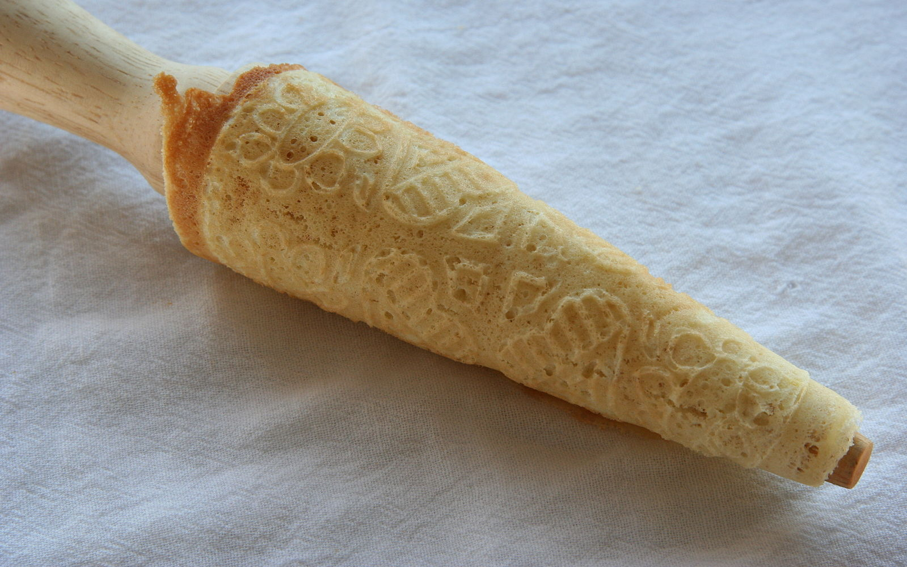

Description
This is a recipe of the traditional Norwegian crispy wafer-like cookie shaped in a cone, often flavored with spices and vanilla and served plain or with whipped cream and berries
Ingredients
- 1 cup white sugar
- 1/2 cup unsalted butter
- 2 large eggs
- 1 1/2 cups all-purpose flour
- 1 cup milk
- 1/2 teaspoon vanilla extract
- 1/2 teaspoon butter flavoring, optional
Steps
- Beat sugar and butter in a large bowl until combined; add eggs, one at a time, mixing well. Add flour, milk, vanilla, and butter flavoring; blend into the batter until smooth.
- Heat krumkake iron over a medium burner; lightly grease both sides of the iron with butter or cooking spray.
- Spoon about one tablespoon of batter onto the center of the preheated iron; close gently until just pressing together. Cook until golden brown on one side, about 30 seconds, then flip and cook on the other side. Remove krumkake from the iron and quickly roll up around the handle of a wooden spoon to form a cone. Repeat with the remaining batter.
- Cool krumkake completely on a wire rack before storing in an airtight container.
Return